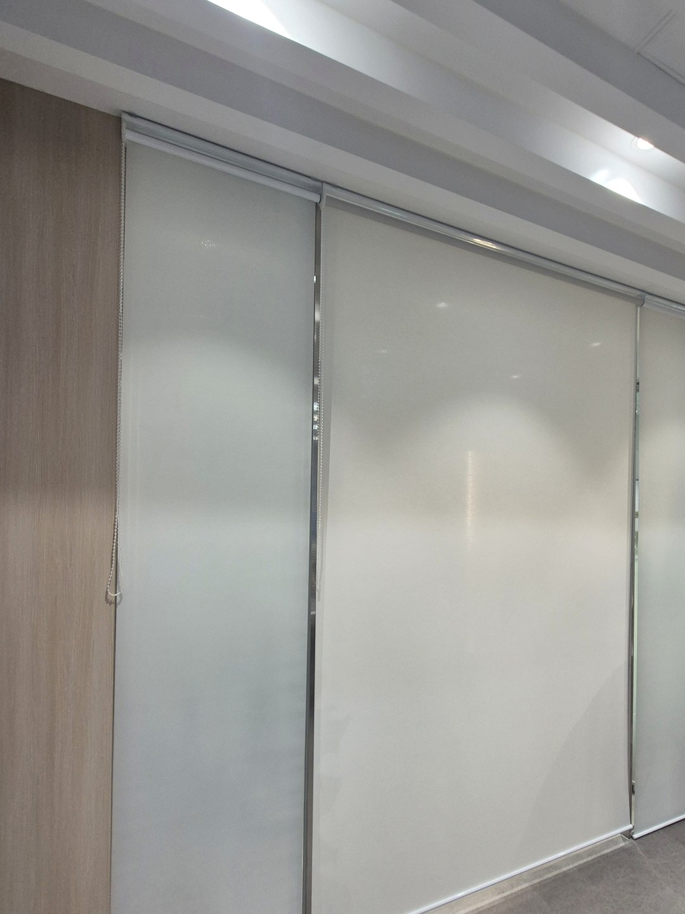
안동 보험사 사무실 유리 칸막이 롤스크린 시공후기
안동 보험사 사무실의 유리 칸막이와 통로에 밝은 롤스크린을 세 칸으로 나눠 설치했습니다.
경기도 업체의 의뢰를 받아 실측부터 시공까지 맡은 현장입니다.
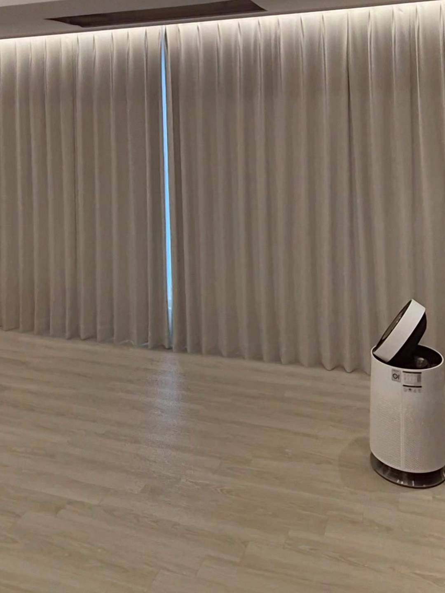
울진 후포 오션더캐슬 거실 전동커튼·안방 암막커튼 시공후기
울진 후포 오션더캐슬에서 바다가 보이는 거실에는 전동커튼을, 안방 발코니 창에는 암막커튼을 설치했습니다.
다른 업체의 의뢰로 진행한 현장입니다.

영천 망정동 주택 현관 암막커튼·롤스크린 시공후기
영천 망정동 주택에서 현관과 거실 사이 통로에 암막 두배나비주름 커튼을 편개로 달아 겨울 외풍과 먼지를 막고, 방마다 있는 작은 창에는 롤스크린을 설치했습니다.
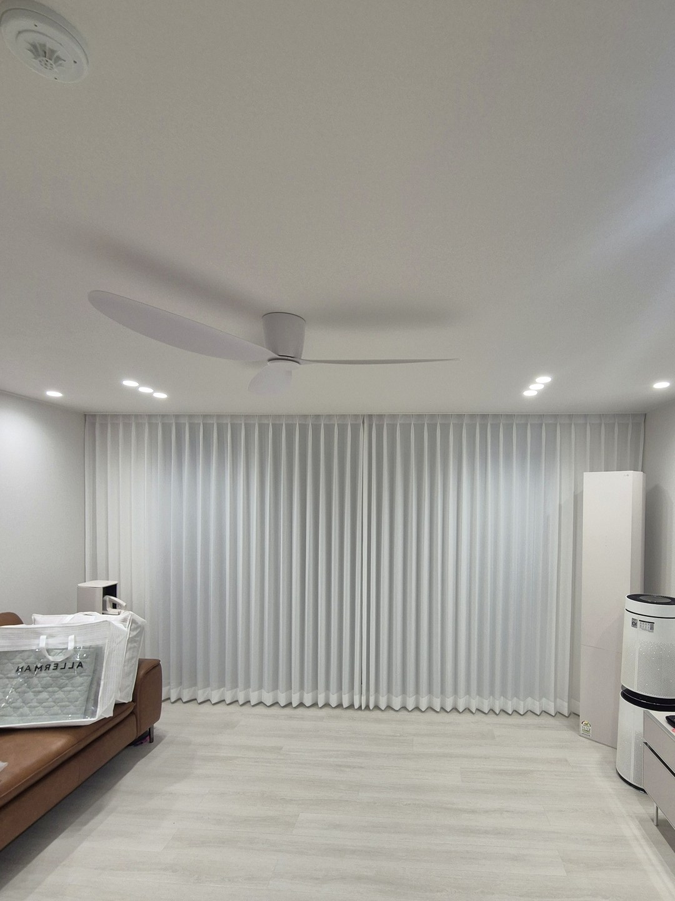
포항 우현동 아파트 거실 커튼·콤비블라인드 시공후기
포항 우현동 아파트 한 집에 거실은 헤비쉬폰 두배나비주름 형상기억 커튼, 안방·작은방·주방·베란다는 베이지 콤비블라인드로 나눠 시공했습니다.
창마다 제품을 다르게 고른 기준을 정리했습니다.
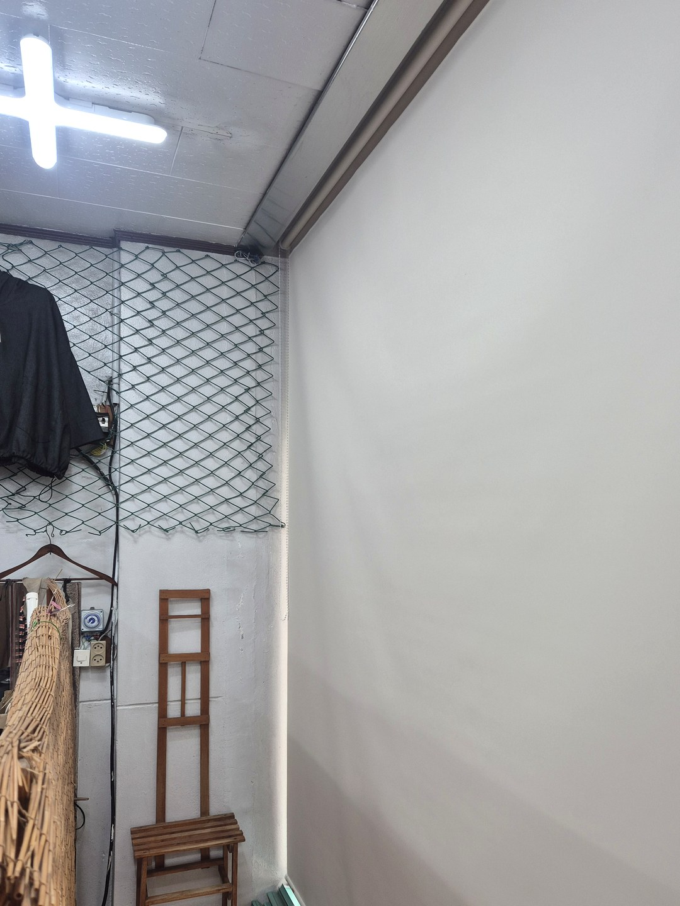
의성 상가 통유리창 암막 롤스크린 교체 시공후기
의성의 한 상가 통유리창에 오래 걸려 있던 알루미늄 블라인드를 떼고 암막 롤스크린으로 바꿨습니다.
대구에 사시는 따님이 부모님 가게를 위해 대신 맡겨 주신 교체 시공입니다.
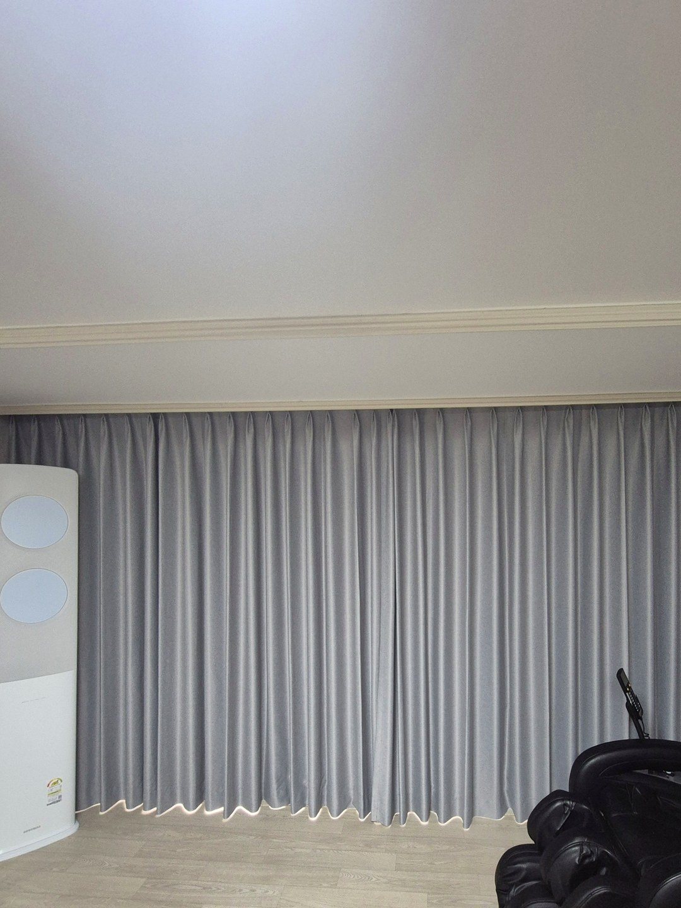
울진 아파트 거실 형상기억 나비주름 암막커튼 시공후기
울진 아파트 거실 창 한 면에 회색 암막커튼을 달았습니다.
나비주름으로 주름을 풍성하게 잡고 형상기억 가공으로 위에서 아래까지 주름 핏을 고르게 마무리한 시공입니다.
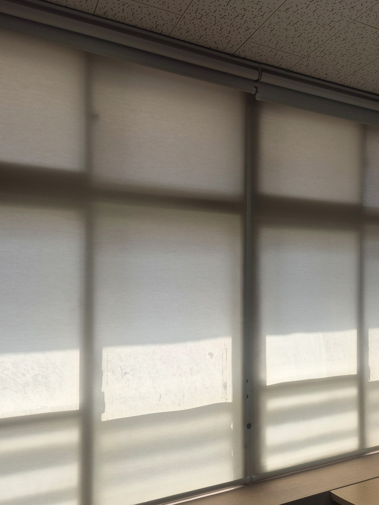
포항 중학교 베이지 롤스크린·암막 2중·허니콤블라인드 시공후기
포항 한 중학교의 오래된 화이트 롤스크린을 철거하고 베이지 롤스크린으로 교체했습니다.
컴퓨터 뒤쪽 창은 베이지와 화이트 암막 롤스크린 두 겹, 상담실 실내 창은 인테리어에 맞춘 허니콤블라인드입니다.
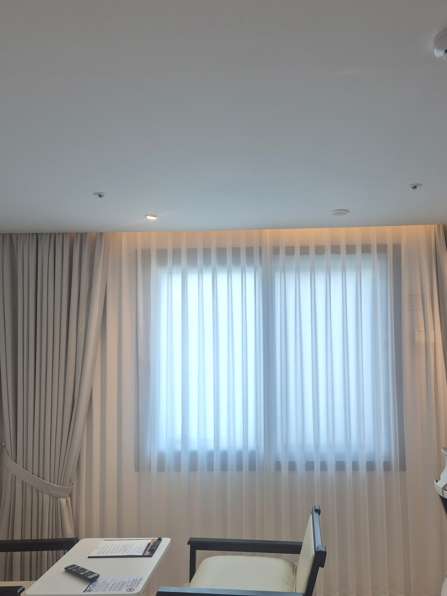
대구 동성로 호텔 객실 쉬폰 두배주름·방음암막커튼 시공후기
대구 동성로 호텔의 두 번째 객실 시공입니다.
창 쪽에는 흰 쉬폰 두배 나비주름, 방 쪽에는 방음암막커튼을 앞뒤로 걸었습니다.
첫 객실을 써 보시고 추가로 맡겨 주신 건입니다.
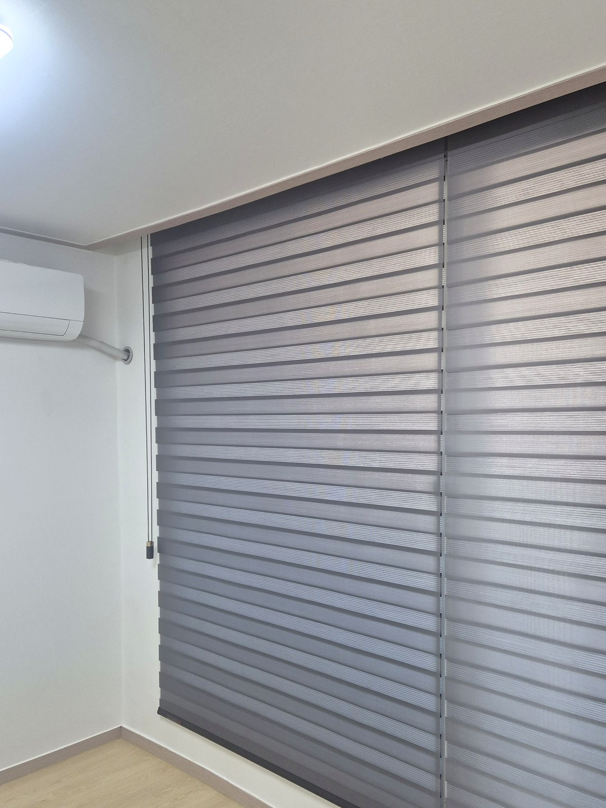
청송 직원숙소 그레이 콤비블라인드 시공후기
청송 직원용 숙소 거실과 방 창에 그레이 콤비블라인드를 달았습니다.
천장 아래에서 바닥까지 내려오는 큰 창은 두 폭으로 나누고, 방마다 다른 창 크기는 따로 재서 한 원단으로 맞췄습니다.
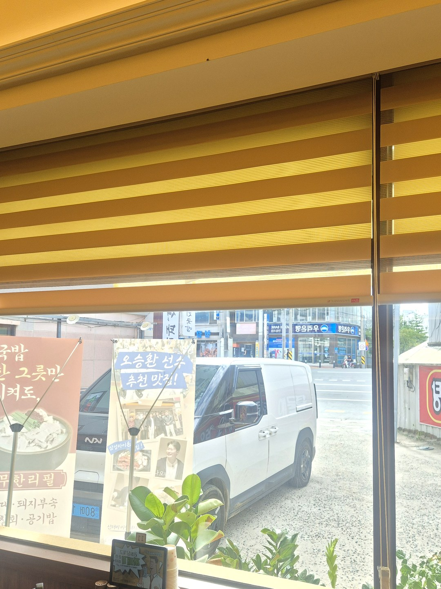
안동 옥동 미성돼지국밥 전면창 콤비블라인드 시공후기
안동 옥동 미성돼지국밥 안동옥동점 전면창에 매장 인테리어 색에 맞춘 카멜·베이지 톤 콤비블라인드를 달았습니다.
ㄱ자로 꺾인 넓은 창은 창틀 기둥마다 한 짝씩 나누고, 헤드레일은 천장 몰딩 아래에 맞췄습니다.
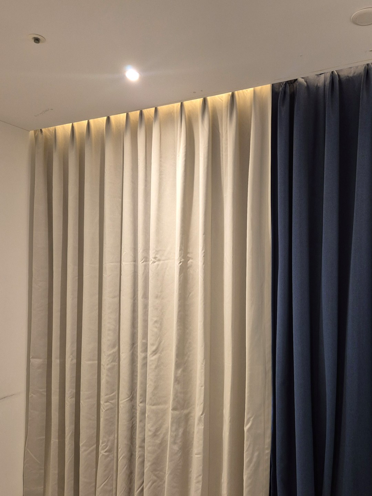
대구 동성로 호텔 객실 방음 3중겹 암막커튼 시공후기
동성로 호텔 객실 커튼을 암막+벨벳+벨벳 3중겹 나비주름으로 교체했습니다.
옆 건물 클럽 음악소리가 창으로 들어오던 객실입니다.
커튼으로 잡히는 소리와 안 잡히는 소리, 대구 담당 정실장 010-5495-9500.
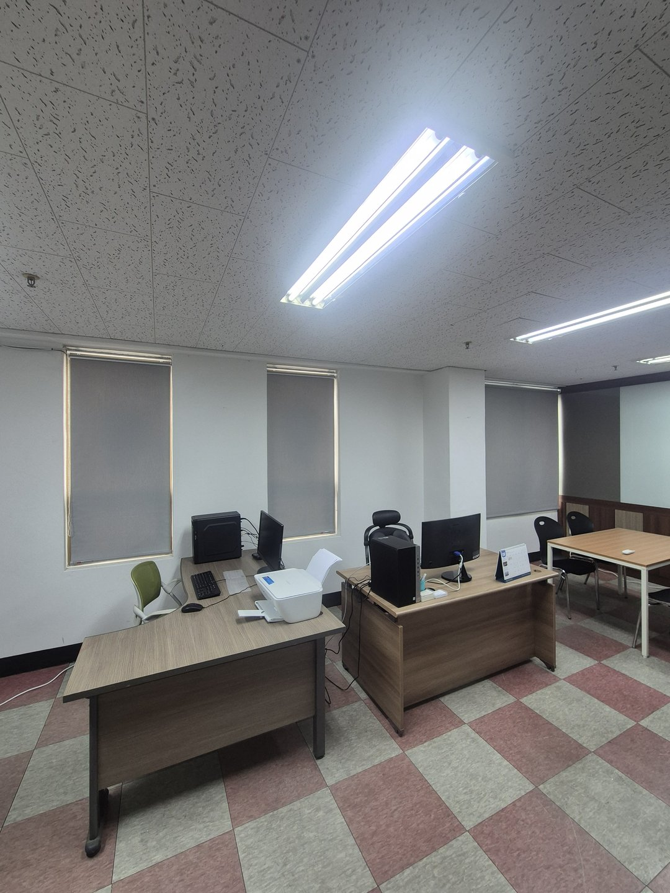
안동 용상동 사무실 그레이 암막 블라인드 시공후기
안동 용상동 사무실 전관을 그레이 암막 블라인드로 시공했습니다.
흰색 암막을 쓰면 원단이 빛나서 눈부심이 남는 이유, 창 크기가 제각각일 때 나누는 기준.
안동 담당 이실장 010-2825-7275.

예천 단독주택 암막커튼 시공후기
예천 단독주택 방 두 곳에 밝은 회색 암막커튼을 시공했습니다.
블라인드가 있는데 커튼을 한 겹 더 다는 이유, 밝은 색 암막이 어두워지지 않는 원리.
예천 담당 이실장 010-2825-7275.

청도 빌라 안방 암막 콤비블라인드 시공후기
청도 빌라 안방에 그레이 암막 콤비블라인드를 벽 폭으로 시공했습니다.
뿌연 유리인데도 아침에 눈이 부신 이유, 침대 머리맡 창에 커튼 대신 콤비를 쓰는 이유.
청도 담당 정실장 010-5495-9500.

포항 우현동 식당 방염 롤스크린 시공후기
포항 우현동 상가 식당 홀 세 면 통창에 화이트 방염 채광 롤스크린을 시공했습니다.
식당 창은 어둡게가 아니라 고르게, 음식이 자리마다 다르게 보이는 이유.
포항 담당 이실장 010-2825-7275.

경주 숙박 아파트 암막커튼 시공후기
경주 숙박용 아파트 방 네 곳과 거실에 암막커튼·롤스크린을 시공했습니다.
하룻밤 자는 손님에게는 적응할 시간이 없다, 빛은 원단이 아니라 틈으로 샌다.
경주 담당 이실장 010-2825-7275.

영주 사무실 암막 롤스크린 전관 시공후기
영주 사무실·교육장·회의실·소회의실 전관을 아이보리 암막 롤스크린으로 시공했습니다.
빔프로젝터 대비 확보와 모니터 반사 차단을 같은 제품으로 나눠 해결한 방법.
영주 담당 이실장 010-2825-7275.
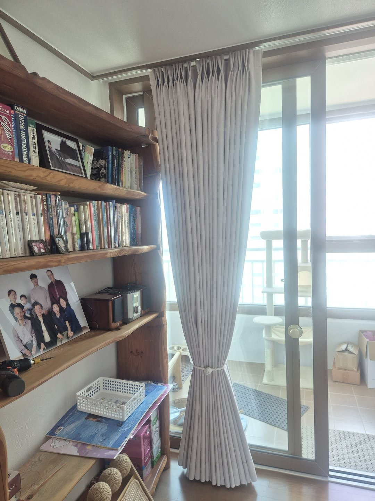
포항 효자 SK뷰 1차아파트 인디언핑크 암막커튼 시공후기
포항 효자동 SK뷰 1차아파트 거실·안방·작은방을 인디언핑크 100% 암막커튼으로 통일하고 주방만 화이트 쉬폰으로 시공했습니다.
나무색에 맞춘 톤 선택과 발코니 문 간섭 회피.
포항 담당 이실장 010-2825-7275.

포항 초곡 삼구트리니엔 거실 이중커튼 · 안방 암막 · 콤비블라인드 시공후기
포항 초곡지구 삼구트리니엔 입주 전 시공 사례입니다.
거실은 쉬폰 속커튼과 베이지 암막커튼을 겹친 이중커튼, 안방은 백아이보리 100프로 암막커튼, 작은방은 베이지 콤비블라인드, 드레스룸은 다크그레이 콤비블라인드로 창마다 쓰임에 맞춰 나눴습니다.
제품은 나누고 색은 묶는 방식입니다.
포항 담당 이실장 010-2825-7275.

경주 자이아파트 집 전체 암막 콤비블라인드 시공후기 거실·안방·작은방·드레스룸
경주 자이아파트 거실, 안방, 작은방 두 곳, 드레스룸까지 창이 있는 다섯 자리를 전부 미색 암막 콤비블라인드로 통일한 사례입니다.
제품은 하나로 맞추고 거실은 두 짝 분할, 안방은 창보다 넓은 폭, 작은방은 조작줄 방향, 드레스룸은 선반 프레임을 피한 브래킷으로 구조만 방마다 다르게 잡았습니다.
경주 담당 이실장 010-2825-7275.
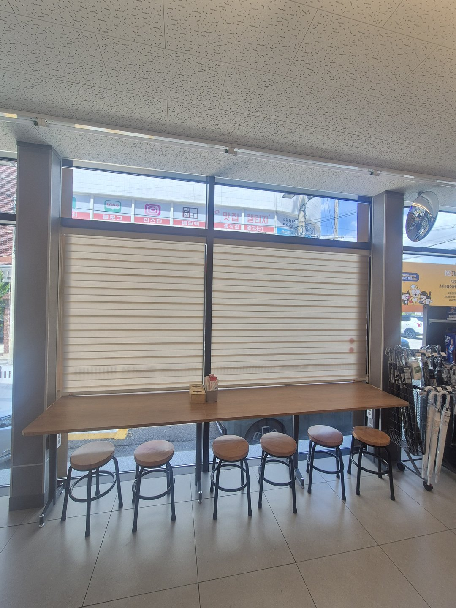
예천 이마트24 편의점 창가 베이지 콤비블라인드 시공후기
예천 이마트24 편의점 창가 취식대 통창에 베이지 콤비블라인드를 2짝으로 나눠 시공했습니다.
눈부심은 잡고 매장 안은 보이게, 상단 고정창은 남겼습니다.
예천 담당 이실장 010-2825-7275.

포항 효자동 주택 안방 암막롤스크린 철거 후 속커튼+암막커튼 시공후기
포항 효자동 주택 안방의 기존 암막롤스크린을 철거하고 쉬폰 두배나비주름 속커튼과 100프로 암막커튼을 백아이보리로 시공한 사례입니다.
롤스크린 테두리 빛샘으로 새벽에 깨시던 침실을, 낮은 은은하게 밤은 완전히 어둡게 나눠 쓰도록 두 겹으로 바꿨습니다.
포항 담당 이실장 010-2825-7275.
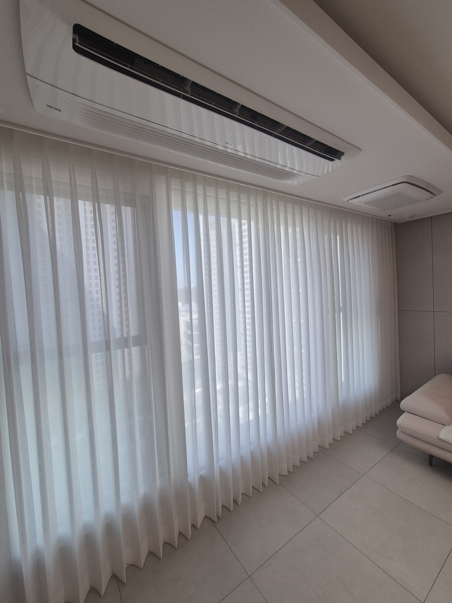
포항 자이애서턴 집 전체 창 시공후기 커튼·콤비블라인드·롤스크린·알루미늄
포항 자이애서턴 여섯 공간의 창을 한 번에 시공한 사례입니다.
거실은 화이트 쉬폰 두배나비주름, 안방은 쉬폰 속커튼과 100프로 암막커튼 백아이보리, 입구방과 중간방은 미색 콤비블라인드, 알파룸은 블랙 암막롤스크린, 주방은 화이트 알루미늄블라인드로 공간마다 다르게 잡았습니다.
포항 담당 이실장 010-2825-7275.

의성 주공2단지 베란다 연블루 채광 롤스크린 시공후기
의성 주공2단지 아파트 베란다에 연블루 채광 롤스크린을 시공한 사례입니다.
연세 있으신 어머님 댁으로, 암막 대신 빛은 통과시키고 눈부심과 바깥 시선만 걸러주는 채광 롤스크린을 두 폭으로 시공해 밝기는 살리고 볕은 부드럽게 눌렀습니다.
의성 담당 이실장 010-2825-7275.
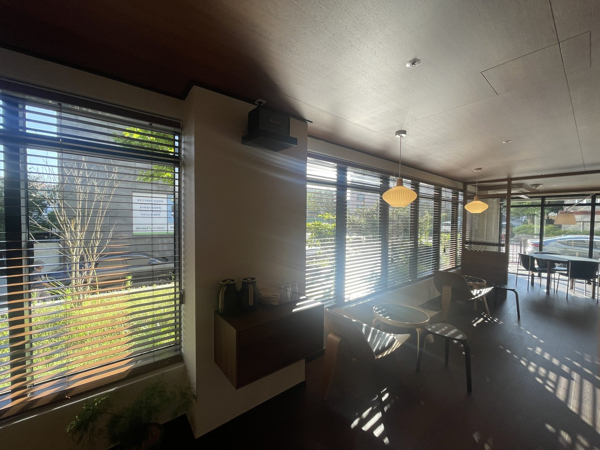
동대구 상가 카페 우드블라인드 시공후기
동대구 상가 카페 우드블라인드 시공입니다.
홀 전면 통창을 기둥 단위로 나눠 달고, 천장 원목과 같은 계열로 색을 맞췄습니다.
아침 직사광만 끊고 밝기는 남기는 각도, 카운터 쇼케이스 반사까지 잡은 방식.
대구 담당 정실장 010-5495-9500.

영주 화성리버빌 거실 그레이 암막커튼 시공후기
영주 화성리버빌 아파트 거실에 그레이 암막커튼을 이중으로 시공한 사례입니다.
홀로 계신 아버님 거실에 여름 볕과 실내 온도가 걱정된 아드님의 요청으로, 기존 화이트 콤비블라인드는 그대로 살리고 그 위에 그레이 암막을 더해 차광과 열기를 함께 잡았습니다.
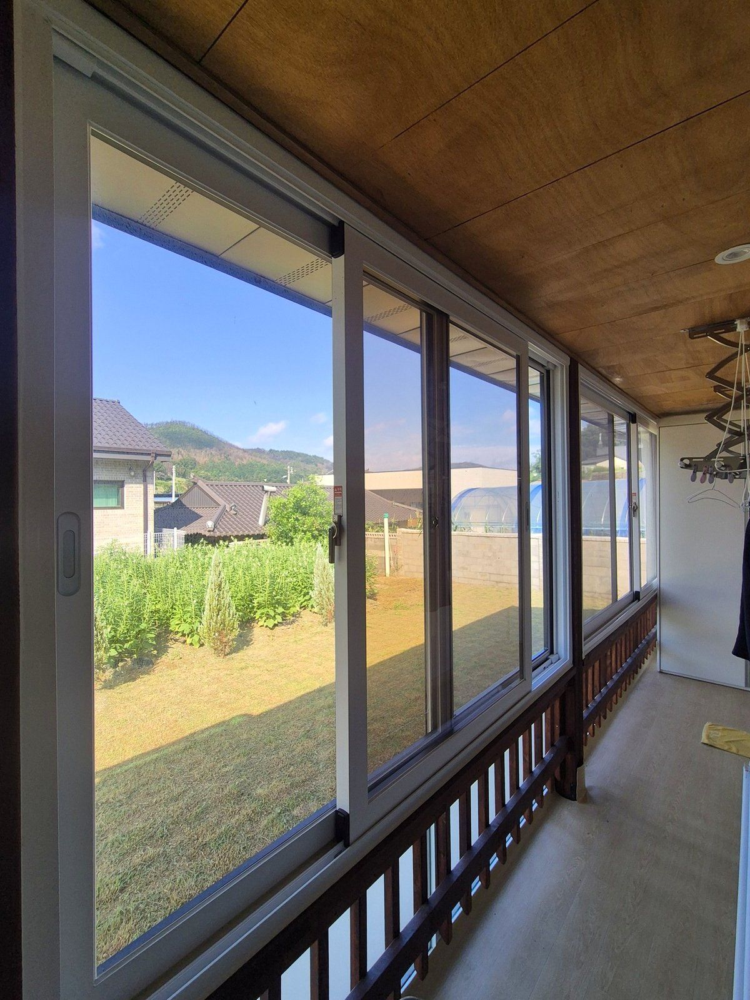
의성 단촌면 단독주택 썬룸 화이트 암막 롤스크린 시공후기
의성 단촌면 단독주택 유리 썬룸에 화이트 암막 롤스크린을 시공한 사례입니다.
여름 직사광선과 열기는 확실히 막고, 밝은 화이트로 좁은 썬룸이 답답하지 않게.
창별로 따로 조절되는 롤스크린으로 채광까지 살렸습니다.
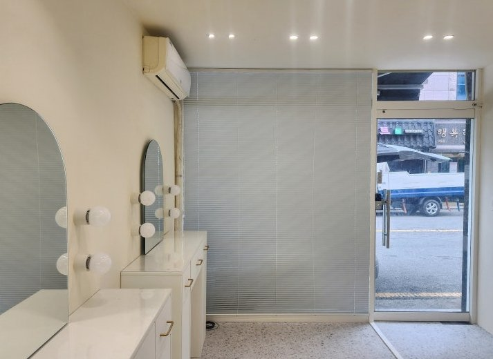
구미 네일샵 전면창 화이트 알루미늄 블라인드·아치 헤비쉬폰 커튼 시공후기
구미 도로변 네일샵 전면 통유리에 화이트 알루미늄 블라인드, 안쪽 아치 통로에 헤비쉬폰 두배나비주름 커튼을 시공한 사례입니다.
밝은 매장은 그대로 두고 시선·눈부심만 잡았습니다.
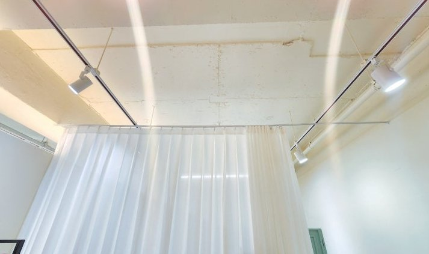
경산 사동 피부관리샵 헤비쉬폰 칸막이 커튼 시공후기
경산 사동 피부관리샵의 어둡던 그레이 커튼을 걷어내고 천장 레일에 화이트 헤비쉬폰을 시공한 사례입니다.
빛은 통과, 프라이버시는 유지, 매장은 환하게.
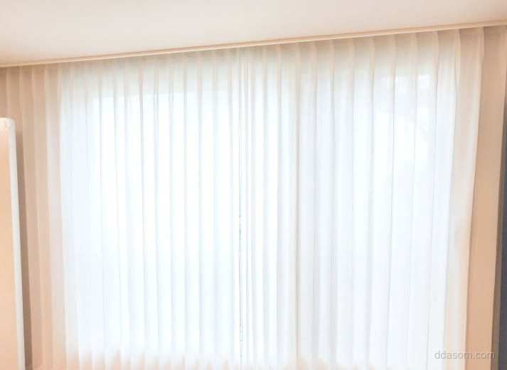
울진 빌라 거실 헤비쉬폰 커튼·안방 콤비블라인드 시공후기
울진 빌라 거실 헤비쉬폰 두배나비주름 커튼과 안방·작은방 그레이 콤비블라인드 시공 사례입니다.
방문 실측 후 창마다 맞춤 제작·설치했습니다.
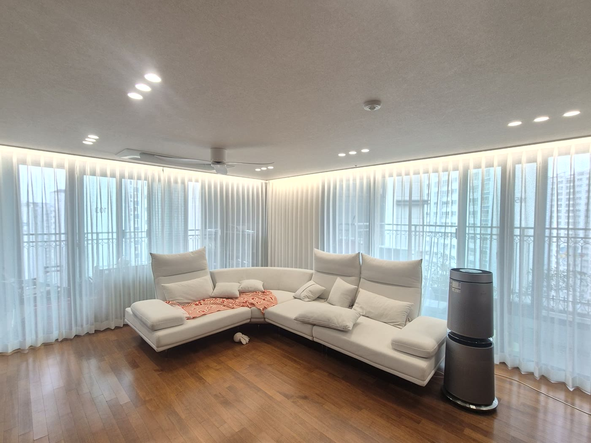
포항 양덕 아파트 ㄱ자 거실 린넨커튼·베란다 롤스크린 시공후기
포항 양덕 아파트 ㄱ자 거실에 린넨 스타일 속커튼을 코너 레일로 이어 시공한 후기입니다.
두배나비주름으로 라인을 살리고, 작은방 베란다는 아이보리 채광 롤스크린으로 마감했습니다.

대전 죽동 빌라 거실 우드룩 콤비블라인드·방 암막롤스크린 시공후기
대전 죽동 빌라 시공 후기입니다.
거실은 베이지 우드룩 콤비블라인드로 밝고 화사하게, 안방·컴퓨터방·게스트룸은 화이트 암막롤스크린으로 깊게 어둡게 나눠 시공했습니다.

의성 기숙사 아이보리 암막 콤비블라인드 시공후기
의성 기숙사·사택형 원룸 건물 전 실에 아이보리 암막 콤비블라인드를 시공했습니다.
방마다 실측을 다시 하고, 넓은 창은 두 폭으로 나눠 이음선 높이를 맞췄습니다.

영천 개인병원 처치실 병원커튼 시공후기
영천 개인병원 처치실 칸막이 커튼과 창측 롤스크린 시공입니다.
스프링클러 때문에 커튼 상부를 메쉬로 두는 이유, 방염 원단, 베드를 감싸는 곡선 레일과 천장 지지봉.
영천 담당 이실장 010-2825-7275.
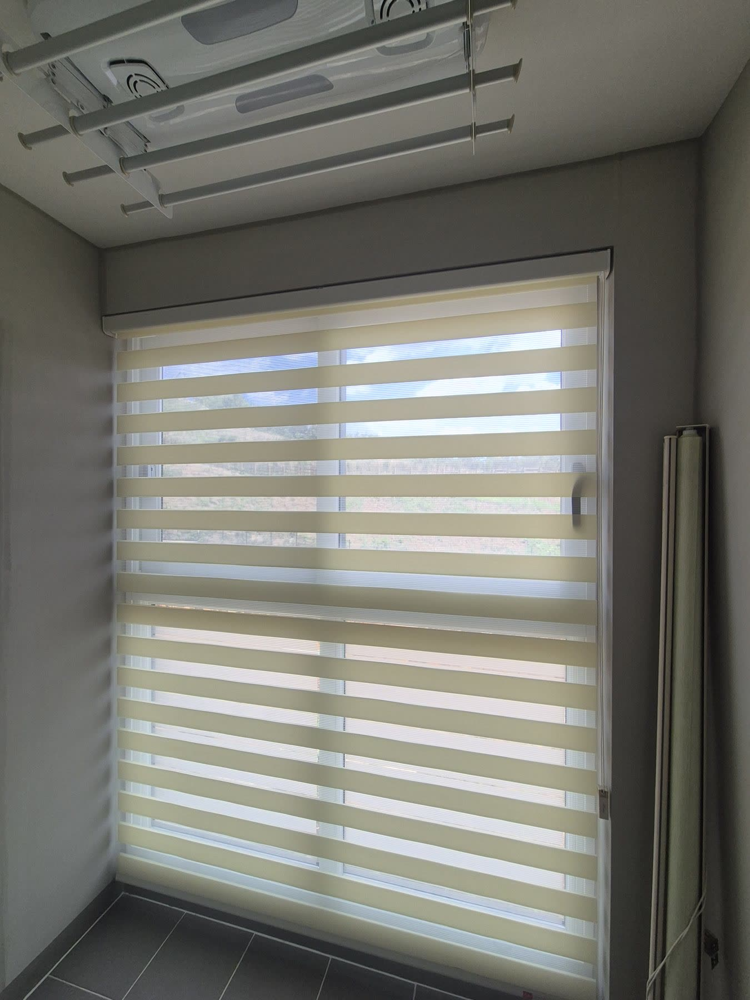
포항 학산 아파트 아이보리 콤비블라인드·커튼레일 시공후기
포항 학산 아파트 콤비블라인드 시공 후기입니다.
이사 후 안 맞는 안방 베란다·작은방 창만 아이보리 콤비블라인드로 새로 맞추고, 커튼레일은 블라인드와 겹치지 않게 커튼박스 모서리에 설치한 과정을 담았습니다.

경주 감포 사택 거실 2중커튼·안방 암막커튼 시공후기
경주 감포 사택 커튼 시공 후기입니다.
첫아이를 기다리는 집, 거실은 화이트 속커튼과 베이지 암막을 겹친 2중 커튼, 아기가 잘 안방·작은방은 100% 암막커튼으로 시공한 과정과 이유를 담았습니다.

영천 상가 전면 통창 콤비블라인드 시공후기
영천 도로변 1층 신축 상가 전면 통창 콤비블라인드 시공 사례입니다.
라이트그레이 톤 3분할 시공으로 외부 시선·눈부심을 차단하고 채광은 부드럽게 유지했습니다.

청송 주왕산가든 대형 홀 채광조절 롤스크린 전체 교체 시공후기
청송 주왕산가든 음식점 대형 홀 채광조절형 롤스크린 전체 교체 사례입니다.
윗창 산 뷰 전망은 살리고 아랫부분 눈부심만 차단, 영업 외 시간에 순차 시공했습니다.
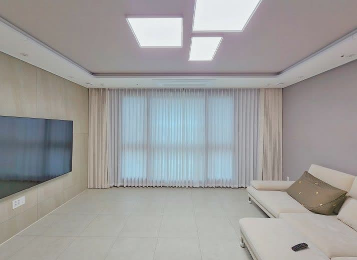
안동 정하동 아파트 거실·안방 베이지 2중커튼 시공후기
안동 정하동 아파트 거실·안방 베이지 2중커튼 시공 사례입니다.
일반쉬폰 속커튼과 베이지 암막 겉커튼을 풀나비주름으로 겹쳐 채광과 차광을 한 번에 잡았습니다.

경주 황성동 빌라 콤비블라인드 시공후기
경주 황성동 빌라 입주 전 빈집에 베이지·아이보리 콤비블라인드를 시공한 후기입니다.
빈집 세팅의 장점과 콤비블라인드 채광 조절, 색 선택 요령을 담았습니다.

영주 가흥동 아파트 거실·아이방·놀이방 커튼 시공후기
영주 가흥동 아파트 거실 헤비쉬폰, 아이방 인디언핑크 커튼, 놀이방 콤비블라인드 시공 사례입니다.
공간별 쓰임에 맞춰 제품을 다르게 잡았습니다.
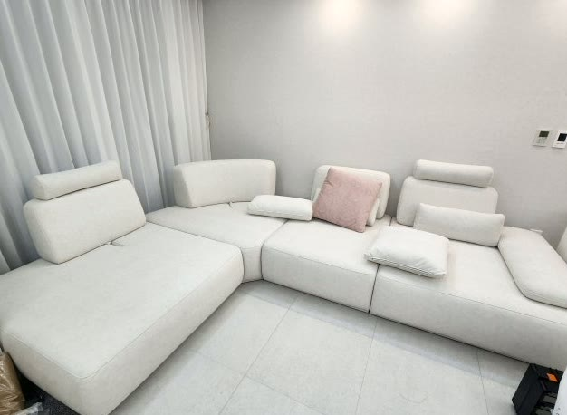
안동 옥동 아파트 2중커튼 시공후기
안동 옥동 신축 아파트 거실·안방 2중 커튼 시공 후기입니다.
은은한 채광과 시선 차단은 기본으로 잡고, 거실은 백아이보리 암막으로 모던하게, 안방은 인디언핑크 암막으로 포근하게 — 같은 2중 구성에 컬러만 달리해 톤을 맞춘 과정을 담았습니다.
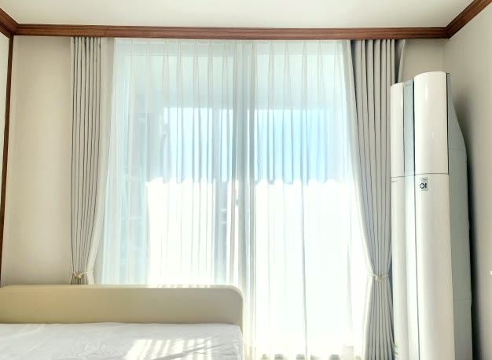
구미 옥계동 침실 헤비쉬폰 암막 2중커튼 시공후기
구미 옥계동 빌라 침실 헤비쉬폰+암막 2중커튼 시공 후기입니다.
낮의 은은한 채광과 시선 차단, 밤의 확실한 암막 숙면을 한 번에 잡은 과정과 매립 창 헤비쉬폰 단독 구성을 담았습니다.
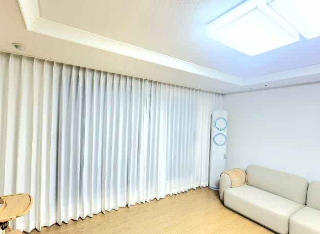
포항 장성동 아파트 헤비쉬폰 콤비블라인드 시공후기
포항 장성동 아파트 입주 세팅 후기입니다.
거실·침실은 화이트 나비주름 헤비쉬폰, 작은방은 콤비블라인드로 채광을 조절하며 전 공간을 한 톤으로 통일한 과정을 담았습니다.

영천 금호읍 단독주택 헤비쉬폰커튼 시공후기
영천 금호읍 단독주택 대형 통창에 화이트 나비주름 헤비쉬폰 커튼을 시공한 후기입니다.
박공천장 전원주택의 채광과 개방감은 살리고 외부 시선만 가린 과정을 담았습니다.
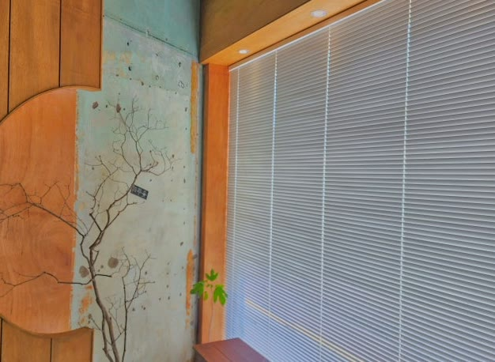
경산 중방동 카페 우드블라인드 시공후기
경산 중방동 1층 카페 우드블라인드 시공 후기입니다.
도로변 대형 통창의 외부 시선과 서향 오후 눈부심을, 화이트·아이보리 알루미늄 우드블라인드 25mm 슬랫으로 함께 잡은 과정을 담았습니다.

영주 아파트 진그레이 암막커튼 시공후기
영주 리모델링 아파트 전 공간 진그레이 암막커튼 시공 후기입니다.
아침에 주무시는 고객님을 위해 거실·안방은 쉬폰+암막 이중 커튼, 작은방은 암막커튼으로 완전 차광을 잡고, 형상기억 두배 나비주름으로 마감한 과정을 담았습니다.
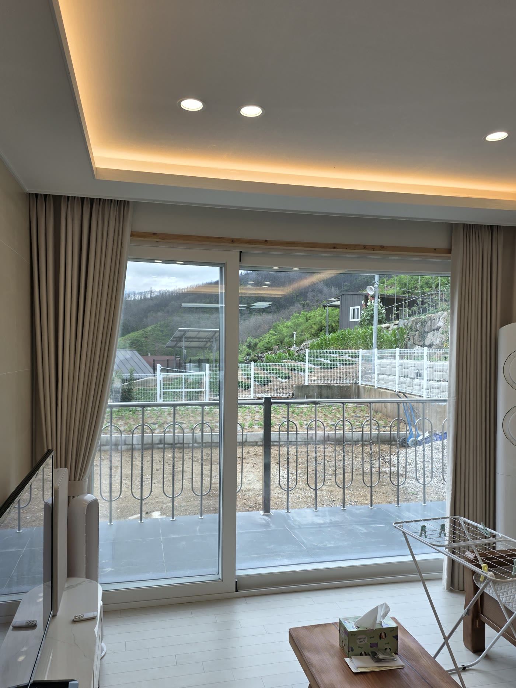
영덕 지품면 신축주택 암막커튼 시공후기
영덕 지품면 신축 단독주택 커튼·블라인드 시공 후기입니다.
거실·안방은 단열까지 잡은 암막커튼 두배 나비주름으로, 현관창·옷방은 콤비블라인드로 마감한 과정을 담았습니다.
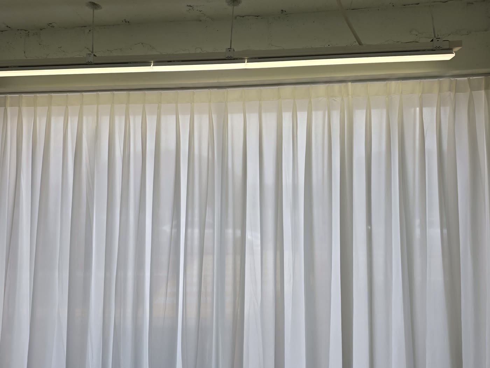
안동 서동문로 에스테틱 매장 헤비쉬폰 커튼 시공후기
안동 서동문로 에스테틱 매장 전면창 헤비쉬폰 커튼 시공 후기입니다.
도로·인도와 면한 1층 통창의 시선 차단과 채광을 함께 잡기 위해 헤비쉬폰 원단을 두배 나비주름으로 시공한 과정을 담았습니다.
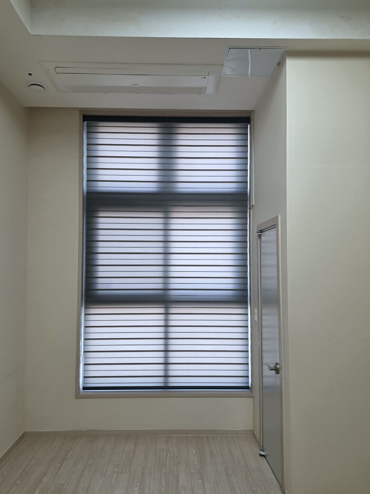
포항 대잠동 오피스텔 진그레이 콤비블라인드 시공후기
포항 대잠동 오피스텔 진그레이 콤비블라인드 시공 후기입니다.
세입자 입주 전, 햇빛에 삭은 낡은 블라인드를 천장 높은 큰 창에 진그레이 콤비로 교체한 과정과 임대 공간 블라인드 고르는 법을 담았습니다.
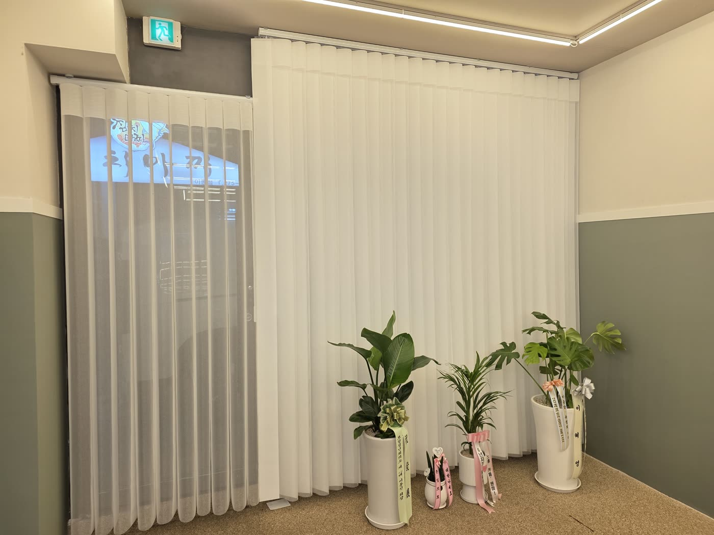
포항 상가 매장 유니슬랫 시공후기
포항 신규 개업 상가 유니슬랫 시공 사례입니다.
도로변 통유리의 외부 시선은 가리고 채광은 살리면서, 높이가 다른 창은 두 폭으로 분리 시공했습니다.
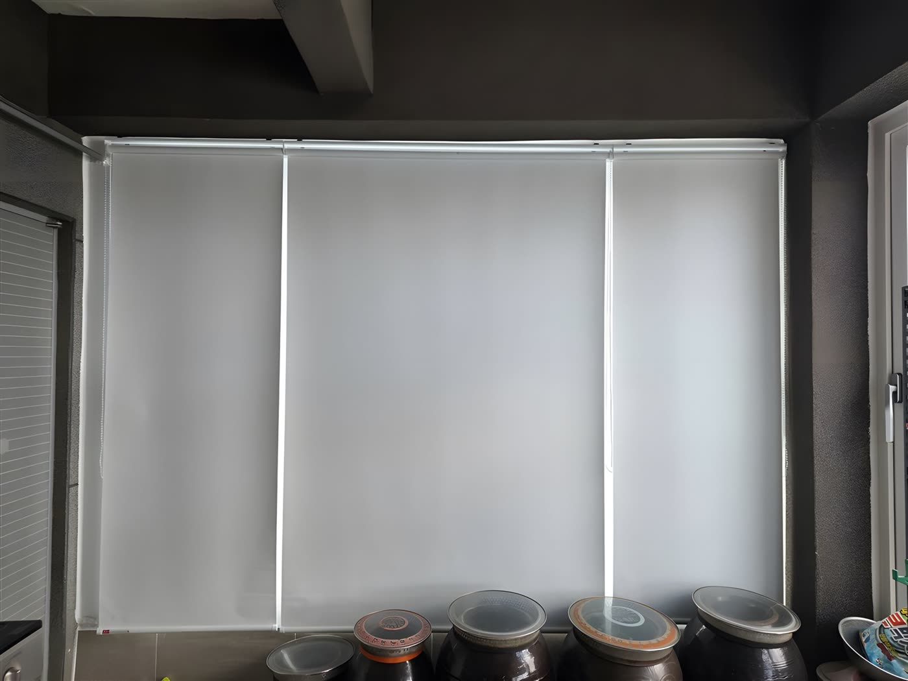
포항 죽도동 베란다 암막롤스크린 시공후기
포항 죽도동 베란다 암막롤스크린 시공 사례입니다.
서향 큰 창에 차광 100% 방염 원단 롤스크린 3개를 창 칸에 맞춰 설치해 눈부심과 열기를 잡았습니다.
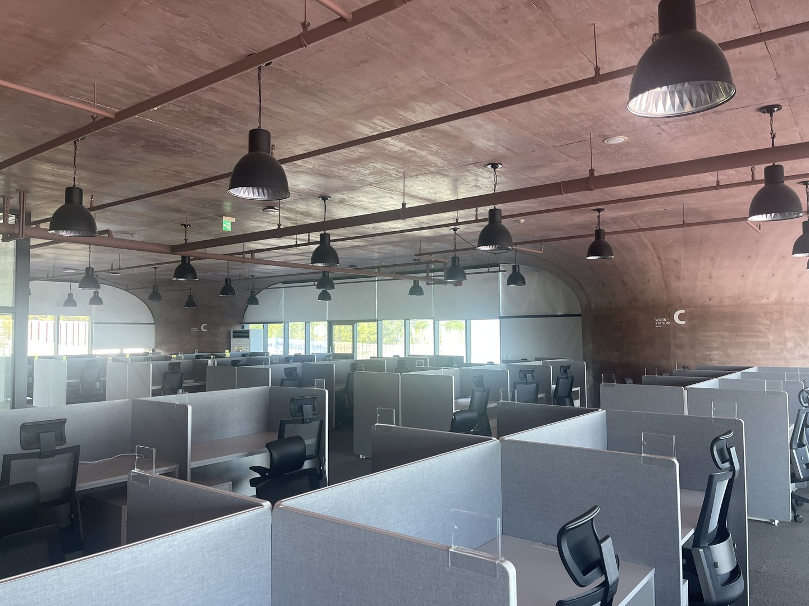
영덕 사무실 화이트 암막 롤스크린 전관 시공후기
영덕 사무실 워크스테이션·창가 복도·테라스측·라운지 전관을 화이트 암막 롤스크린으로 시공했습니다.
곡면 노출 콘크리트 천장과 아치 창 브래킷, 바다 뷰를 살리면서 눈부심만 잘라낸 방법.
영덕 담당 이실장 010-2825-7275.
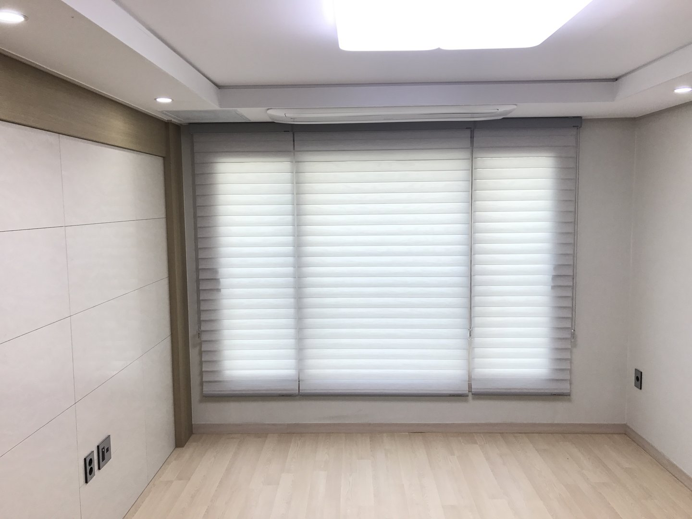
경산 상가주택 거실 트리플쉐이드·안방 암막콤비블라인드 시공후기
경산 상가주택 거실은 그레이 트리플쉐이드, 안방은 암막 콤비블라인드로 시공했습니다.
밝은 집에 그레이를 쓴 이유, 넓은 창을 세 짝으로 나눈 이유, 암막 빛샘과 상부 박스 깊이.
경산 담당 정실장 010-5495-9500.
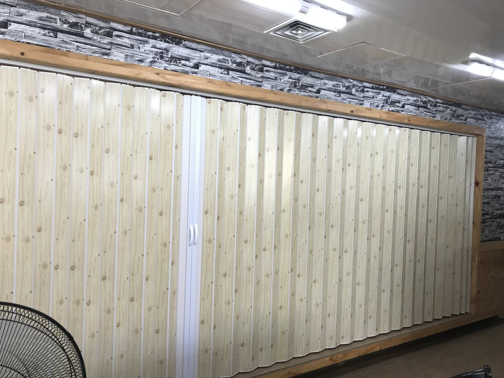
울진 식당 홀딩도어(자바라) 칸막이 시공후기
울진 식당 홀을 좌식 방으로 나누는 우드 홀딩도어(자바라 도어) 시공입니다.
바닥 레일을 빼고 목재 상인방에 상부 레일만 잡은 이유, 중앙 양개로 접은 이유.
울진 담당 이실장 010-2825-7275.